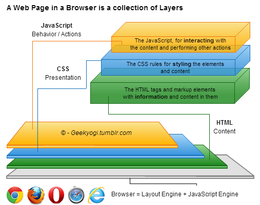

Om Shankar
\m/
Likes the Web and believes moving it forward
Himself doesn't know much, but never fails to speak !
Has contributed to Github, some not-that useful Demos
Loves HTML5 and CSS3
JavaScript freak !
PS: When no clue, press right arrow key. When bottom arrow glows, you can press down arrow key
Explained at a blog ...
Clicking on the image takes you there !
=== to test Equality{ eval() and setTimeOut, setInterval, etc. for executing codetry catch in a loop
"5" == 5; // true
"5" === 5 ; // false
var a = 5; eval("a = 6"); setTimeOut("a = 5", 200); // bad
/**** Performance ****/
// very bad
var object = ['foo', 'bar'], i;
for (i = 0; i < object.length; i++) {
try {
// do something that throws an exception
} catch (e) {
// handle exception
}
}
// Better:
try {
for (i = 0; i < object.length; i++) {
// do something
}
} catch (e) {
// handle exception
}
new Constructors for Objects, Arrays, Numbers, Strings.0, an empty string, null, undefined and false itselfObjects are different than Arrayselse if in JavaScript, theoretically at least
// Since local variables are first in this chain, they’re always faster than globals
function LocalScope() {
var doc = document,
blah = doc.getElementById('myID'),
blah2 = doc.getElementById('myID2'); // instead of document.getElementById
}
// Maximize object resolution speed and minimize scope chain
var url = location.href; // slower
var url = window.location.href; // faster
// Literals and Constructors
// Any Object can be assigned properties and methods
var abc = new Number(5); // -- constructor way
abc * 2; // 10, so its a number
typeof abc; // "object", Hey, wait! what!
abc.someProperty = "The Greate Gatsby is not so Great !"; // Dude, common!
var def = 5;
// def has almost all the properties that abc does. Both are Numbers
// However, JavaScript abstracts the constructor and makes def read-only
typeof abc; // "number" !!
def * 10; // 50
def.someProperty = "Big Bang Theory is a great show"; // won't work
var hamburger = 8.20,
fries = 2.10,
total = hamburger + fries;
console.log(total); // Outputs 10.299999999999999
hamburger = hamburger * 100, fries = fries * 100, total = hamburger + fries;
total = total / 100; // Outputs 10.3
// Alternative primitive/native ways are faster than helper functions and APIs
var min = Math.min(a, b);
arr.push(val);
// faster
var min = a < b ? a : b;
arr[arr.length] = val;
// Complex functions can be cached and used in a loop locally
var d=35, y = 0;
for (var i=0; i<1000; i++) {
y += Math.sin(d)*10;
} // Accessing Math Obj and then its "sin" method in a loop is slower
var d = 55, y = 0, math_sind = Math.sin(d)*10;
for (var i=0; i<1000; i++) {
y += math_sind;
}
// If Else
if (condition) {
// walk
} else if (condition2) {
// dance
} else {
// sing
}
// Above is same as:
if (condition) {
// walk
} else {
if (condition2) {
// dance
} else {
// sing
}
}
// Truthiness Falsiness
2 || "hello world" || 0 || false || -1 || undefined; // A true expression
// When we use || to join, the return value is first true or last false value (if all false)
5 && true && undefined && true && "Hello world" && 10.2; // False expression, when using &&
// Return value is first false or last true (if all true). Hence, the value of above is undefined
// !Associative arrays
abc = {
0: 1,
someProperty: false,
10: "Some Random String",
true: 42
}
abc.someProperty; // false
abc['someProperty']; // false, but this does not make it associative array
// When we use square brackets [], the content inside is evaluated
// [] are only for that purpose
var number = 10;
abc[number]; // "Some Random String" , notice the absence of quotes around number
abc[ 1 > 0 ]; // 42, Surprise !
// As seen previously, you can add properties to almost anything
var someNumber = 10;
someNumber.someProperty = 20;
someNumber['someOtherProperty'] = 30;
// does this mean someNumber is an associative array? No !
// So go ahead and kick those people who want associative arrays !
for-in in performance-critical functions call and apply for functions to change their context effectivelyhasOwnProperty to check if the property is Object's own
// Hoisting concept
alert(abc);
var abc = 'some string';
// is same as:
var abc;
alert(abc);
abc = 'some string'; // And thats why you do *get* an "alert", but it says "undefined"
// More
var n = 1;
function printSomething() {
console.log(n);
var n = 2;
console.log(n);
}
printSomething();
// undefined
// 2
// for the same reason, this works
abc();
function abc() { ... }
// But this doesn't
abc();
var abc = function() { ... } // TypeError: undefined is not a function
// Memoization
// caching the return value of the function for already calculated values of n
var fibonacci = (function() {
var memo = {};
function f(n) {
var value;
if (n in memo) {
value = memo[n];
} else {
if (n === 0 || n === 1)
value = n;
else
value = f(n - 1) + f(n - 2);
memo[n] = value;
}
return value;
}
return f;
})();
var mySingleton = (function () {
var instance;
function init() {
var privateVariable = "Im a private";
var privateRandomNumber = Math.random();
return {
publicMethod: function () {
console.log( "The public can see me!" );
},
publicProperty: "I am also public"
};
};
return {
getInstance: function () {
if ( !instance ) {
instance = init();
}
return instance;
}
};
})();
var instanceOne = mySingleton.getInstance(),
instanceTwo = mySingleton.getInstance();
instanceOne.publicMethod(); // is same as calling instanceTwo.publicMethod()